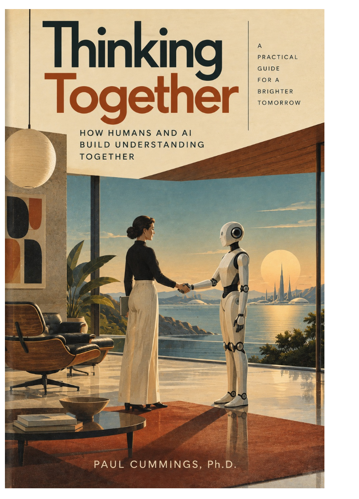
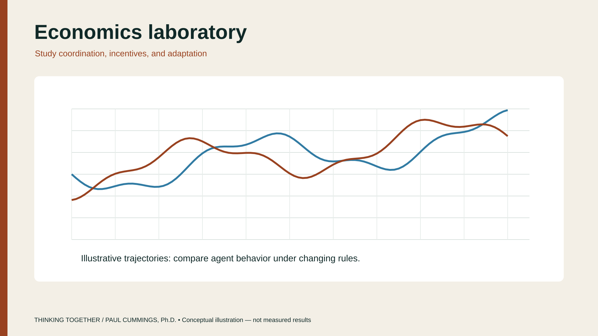
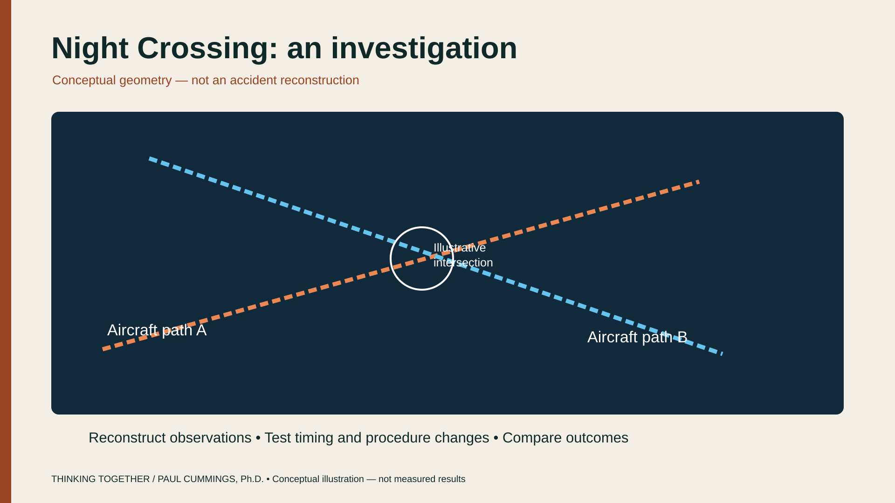

The book
How to work with LLMs and AI without handing them judgment.
Learn moreHow humans and AI build understanding together
A practical guide to working with large language models and other AI systems — keeping human judgment in the loop, and using computation where evidence can still be inspected.

How to work with LLMs and AI without handing them judgment.
Learn more
Agent-based models, multi-agent AI, and experimental validation.
Explore
Helping organizations apply modeling and human–AI methods to real-world challenges.
Work together
Notes on AI, modeling, decision-making, and the future.
Read the blog
Controlled markets for identifying how unfamiliar AI agents bid when information and peers change.
Read the case →
Night Crossing at Reagan National: geometry, timing, and partial views examined together.
Read the case →